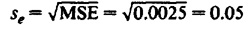
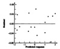
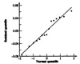

| Previous | Table of Contents | Next |
| TABLE 21.11 Execution Times for the Scheme versus Spectrum Study | |||
|---|---|---|---|
| Workload | Scheme86 | Spectrum125 | Spectrum62.5 |
| Garbage Collection | 39.97 | 99.06 | 56.24 |
| Pattern Match | 0.958 | 1.672 | 1.252 |
| Bignum Addition | 0.01910 | 0.03175 | 0.01844 |
| Bignum Multiplication | 0.256 | 0.423 | 0.236 |
| Fast Fourier Transform (1024) | 10.21 | 20.28 | 10.14 |
| TABLE 21.12 Computation of Effects for the Scheme versus Spectrum Study | ||||||
|---|---|---|---|---|---|---|
| Scheme | Spectrum | Spectrum | Row | Row | Row | |
| Workload | 86 | 125 | 62.5 | Sum | Mean | Effect |
| Garbage Collection | 1.6017 | 1.9959 | 1.7500 | 5.3477 | 1.7826 | 1.6212 |
| Pattern Match | -0.0186 | 0.2232 | 0.0976 | 0.3022 | 0.1007 | -0.0607 |
| Bignum Addition | -1.7212 | -1.4949 | -1.7447 | -4.9608 | -1.6536 | -1.8150 |
| Bignum Multiplication | -0.5918 | -0.3737 | -0-6271 | -1.5925 | -0.5308 | -0.6922 |
| Fast Fourier Transform (1024) | 1.0090 | 1.3092 | 1.0060 | 3.3243 | 1.1081 | 0.9467 |
| Column sum | 0.2791 | 1.6598 | 0.4819 | 2.4208 | ||
| Column mean | 0.0558 | 0.3320 | 0.0964 | 0.1614 | ||
| Column effect | -0.1056 | 0.1706 | -0.0650 | |||
| TABLE 21.13 ANOVA Table for the Scheme versus Spectrum Study | |||||||
|---|---|---|---|---|---|---|---|
| Sum of | Percentage of | Degrees of | Mean | F- | F- | ||
| Component | Squares | Variation | Freedom | Square | Computed | Table | |
| y | 22.54 | ||||||
|
| 0.39 | ||||||
|
| 22.15 | 100.00 | 14 | ||||
| Processors | .22 | 1.00 | 2 | 0.11 | 39.29 | 3.11 | |
| Workloads | 21.90 | 98.89 | 4 | 5.48 | 1935.48 | 2.81 | |
| Errors | 0.02 | 0.10 | 8 | 0.0025 | |||

| TABLE 21.14 Confidence Intervals for Effect Differences in the Scheme versus Spectrum Study | |||
|---|---|---|---|
| Scheme86 | Spectrum125 | Spectrum62.5 | |
| Scheme86 | (-0.3387, -0.2136) | (-0.1031, 0.0220)a | |
| Spectrum125 | (0.1730, 0.2982) | ||
a Not significant. | |||

FIGURE 21.3 Plot of the residuals versus predicted response for the Scheme versus Spectrum study.
The main problem with the data is that among the two factors used in the study, differences in the processors account for only 1% of the variation while differences in the workloads account for 99%. In general, such a widely different set of workloads is not recommended unless a large number of workloads is used to cover the range. In Chapter 5, it was pointed out that using a workload that makes a component other than the component under study a bottleneck would lead to the conclusion that the alternatives under study are not different. The problem here is similar. Using a small set of such widely different workloads would generally lead to the conclusion that the components under study are not different. Any set of experiments where primary factors explain more variation than secondary factors is considered a better set.

FIGURE 21.4 Normal quantile-quantile plot for the residuals of the Scheme versus Spectrum study.
A multiplicative model should be used whenever the physical considerations require it. However, the conclusions based on additive and multiplicative models are numerically different only if the numerical range covered by the observations is large. This is because the log(x) function is linear for small values of x. In the following case study, an explicit attempt was made to keep the range small by suitably scaling the workloads so that the times for all worldoads on a processor were comparable.
Case Study 21.3 The elapsed times for five different workloads on four different processors are listed in Table 21.15. The worldoads were scaled so that the total number of instructions on different workloads was comparable. From physical considerations it is clear that an additive model should not be used for this problem, but our purpose here is to see the difference between an additive model and a multiplicative model from statistical considerations.
| Previous | Table of Contents | Next |
){kind=link}
){kind=link}
){kind=link}
){kind=link}